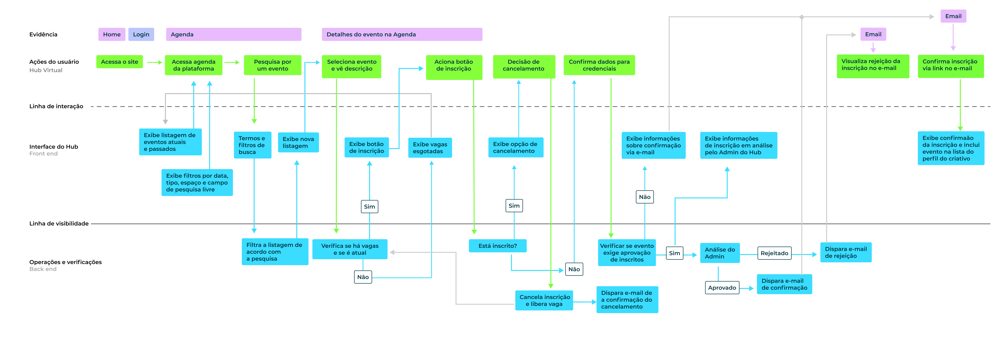
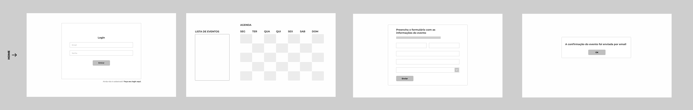
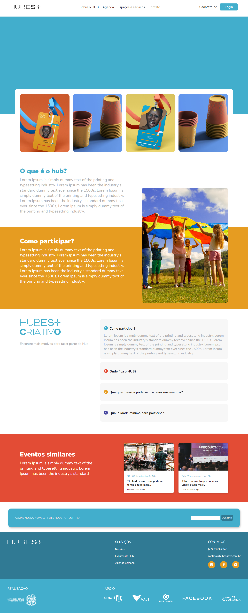
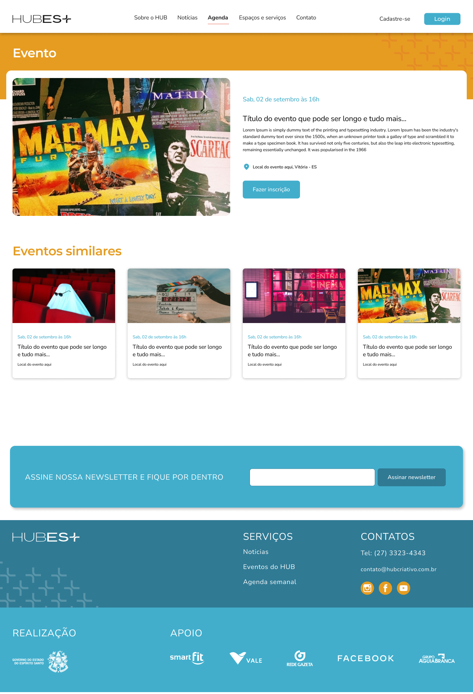
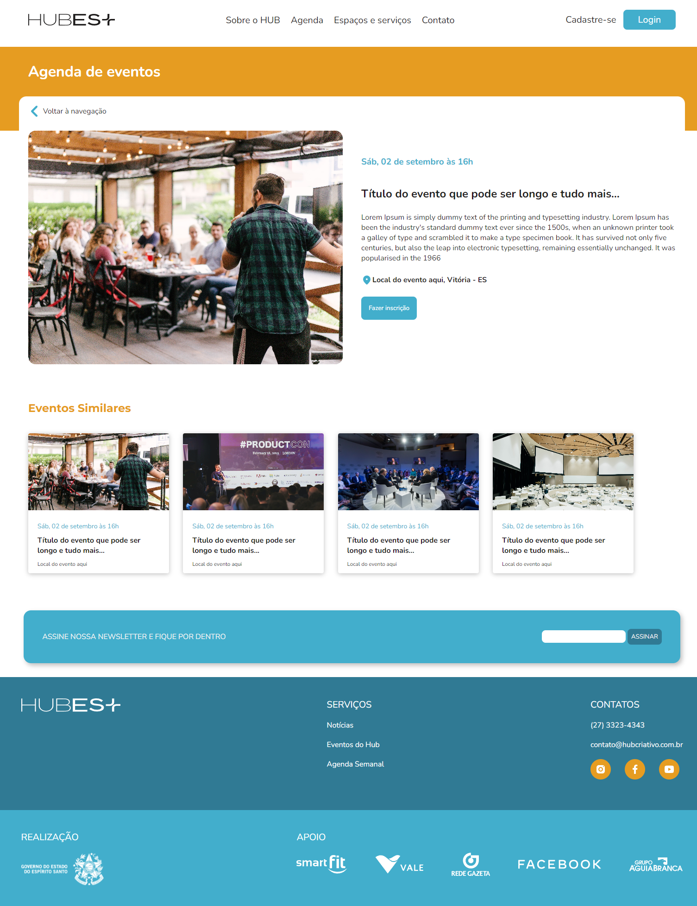
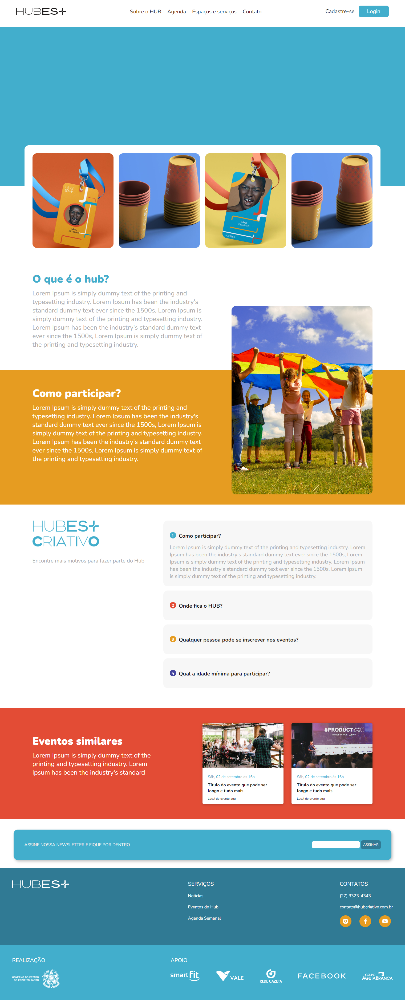
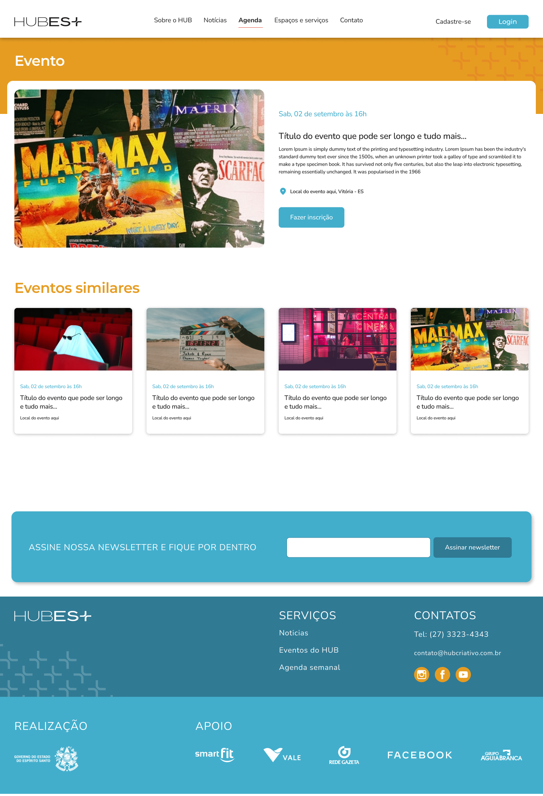
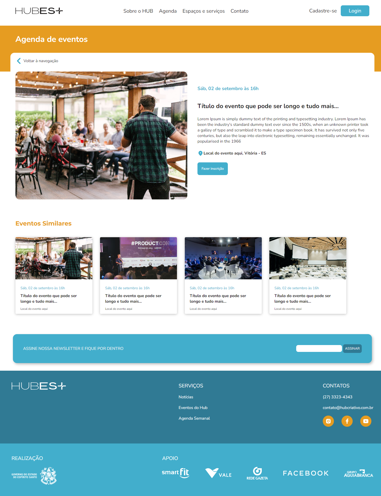

Sobre o projeto
O ES+Criativo é um programa de estímulo ao desenvolvimento econômico do Espírito Santo por meio de ações que visam impactar econômica e socialmente os empreendimentos criativos e inovadores em todos os territórios capixabas. Trata-se de uma ação inicial de um plano estruturante de fortalecimento da vertical Economia Criativa do Ecossistema Capixaba de Inovação, coordenado pela Secretaria de Cultura do Governo do ES, com fomento FAPES e em parceria com o Centro Estadual de Educação Técnica Vasco Coutinho, o Instituto Federal do Espírito Santo e a UFES. Este projeto de extensão trata de ações ligadas ao projeto do Hub Criativo Virtual no contexto da UFES, a saber: construção de uma plataforma gamificada para o Hub Criativo - viabilizando um ambiente imersivo para interação e formação dos criativos.
Sob orientação do Prof. Dr. Hugo Cristo, integrei a equipe responsável pelo design de interação, design da informação, design visual e de experiência do usuário no Hub Criativo Virtual, de modo integrado às entregas da equipe de desenvolvimento.
 Trabalhamos as estruturas de arquitetura da informação e jornada do usuário, validando fluxos de interação e hierarquização da informação em modelos e protótipos de interface. Desenvolvemos e aprimoramos o design de interação e da informação através de modelos de baixa, média e alta fidelidade. Realizamos a entrega de todo design visual da plataforma, bem como os templates front-end das telas em HTML e CSS para a equipe de desenvolvimento.
 





Design x Template